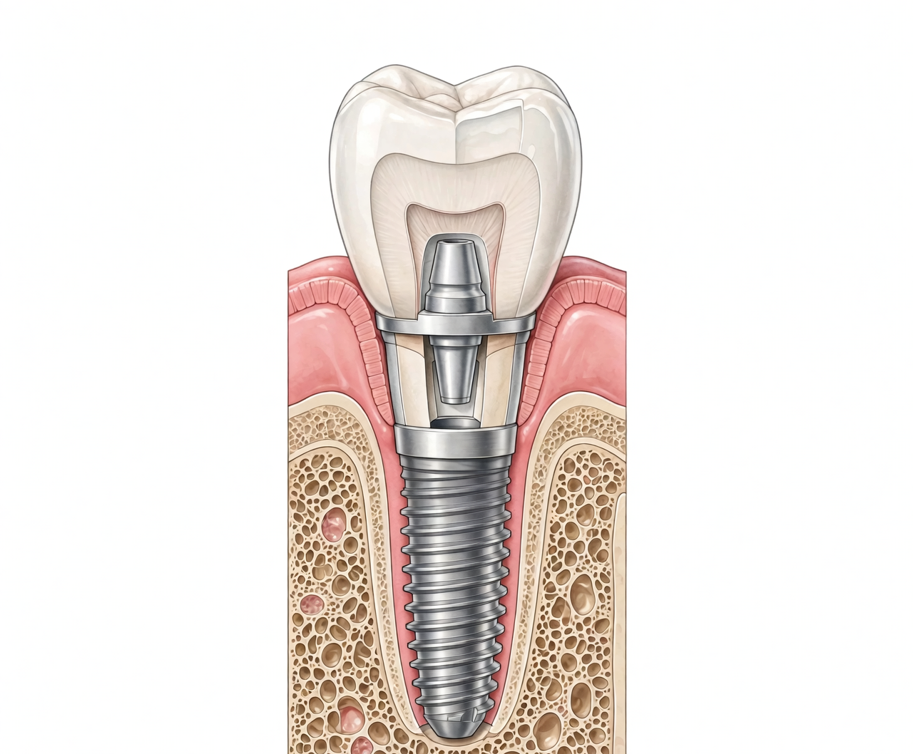
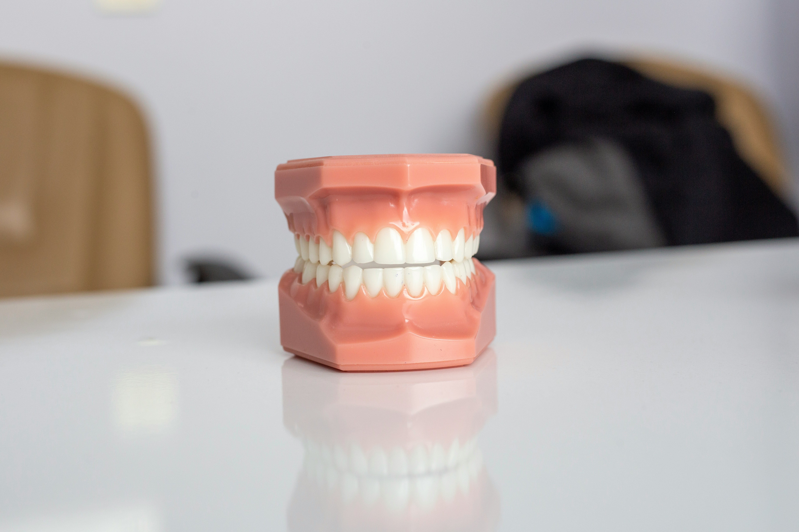
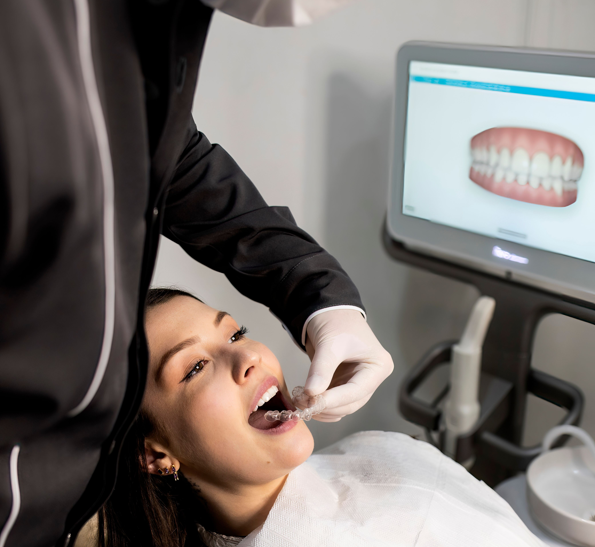

Implant treatment is a modern procedure involving the placement of prosthetic teeth onto titanium implants anchored in the jawbone to replace missing teeth. It aims to deliver results that closely resemble natural teeth in terms of both aesthetics and function. While helping to resolve chewing, speech, and aesthetic issues caused by tooth loss, it also contributes to the maintenance of oral health.
Implant treatment can be considered for individuals whose general health is suitable and whose jawbone structure is adequate for the procedure. Applicable in a wide range of situations—from the loss of a single tooth to complete tooth loss—this treatment method is planned following a detailed examination and radiological assessment.
Since local anesthesia is used during the implant procedure, the treatment is generally performed comfortably. Any mild sensitivity or discomfort experienced afterward can usually be managed quickly. Adhering to the care instructions and medications recommended by the physician supports the healing process.

Prosthetic teeth treatment is a therapeutic approach designed to restore the function and aesthetic appearance of missing or lost teeth. Depending on the individual's oral structure and needs, fixed or removable prosthetic options can be planned. The goal is to support chewing, speaking, and smiling aesthetics while improving the overall quality of life.
Custom-made prostheses are designed to fit the structure of the mouth. Although there may be a brief adjustment period during the initial days, they eventually become a natural part of daily life. Regular check-ups and proper use help maintain comfort..
The lifespan of prosthetic teeth depends on the type of prosthesis chosen, oral hygiene practices, and regular dental check-ups. With proper care and routine maintenance, prostheses can last for many years while maintaining their functionality and appearance.

Digital impression-taking and CAD/CAM-assisted prosthesis fabrication constitute a modern treatment method in which custom-made prostheses are planned and produced using advanced digital technologies. As an alternative to traditional impression methods, digital impressions are obtained via intraoral scanners, and high-precision prostheses are prepared using computer-aided design systems. This method contributes to a treatment process that is planned with greater comfort, speed, and precision.
Prostheses produced using CAD/CAM technology are designed with the individual's tooth structure and aesthetic expectations in mind. Through precise planning, the aim is to achieve aesthetic and functional results that harmonize with the appearance of natural teeth.
The duration of treatment may vary depending on the scope of the procedure. Thanks to digital planning and manufacturing technologies, certain stages can be completed more quickly. Following the examination, a personalized treatment plan is created, and detailed information regarding the process is provided.

Learn about our treatment processes and available appointment times by contacting us.
You can contact us for questions or appointment requests.
Monday - Saturday
10:00 - 19:00Sunday
Closed